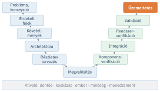
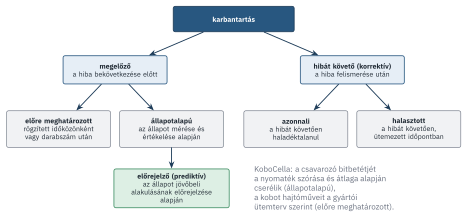
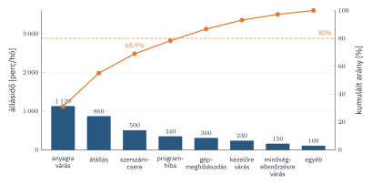
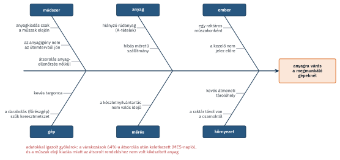
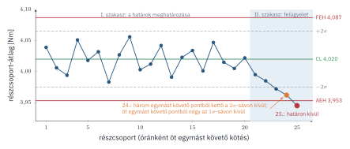
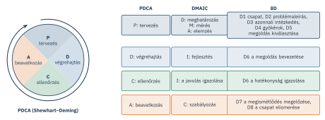

A fejezet feldolgozása után képes leszel:
- megtervezni egy rendszer átadását és üzembe helyezését, és megnevezni az átadás lezárásának feltételeit;
- megkülönböztetni a karbantartás fő fajtáit, és a rendszer jellemzőihez illő karbantartási stratégiát választani;
- alkalmazni a minőségügy alapeszközeit (Pareto-diagram, ok-okozati diagram, hisztogram, kontrollkártya) üzemi problémák elemzésére;
- kontrollkártyát készíteni és értelmezni, és kiszámolni a folyamatképességi indexeket;
- PDCA-, 8D- vagy DMAIC-ciklusban vezetni egy fejlesztést, és üzemi adatokból trendeket felismerni;
- már a tervezéskor figyelembe venni a rendszer életciklusának végét.
A V-modell jobb ága nem ér véget a validációval. A rendszert át kell adni, üzembe kell helyezni, üzemeltetni és karban kell tartani, a teljesítményét követni és javítani kell, végül ki kell vonni a használatból. Az üzemeltetés célja, hogy a rendszer kielégítse azt a szükségletet, amelyre létrehozták, és ezt tartósan fenntartsa. A továbbfejlesztés is ide tartozik, de csak addig, amíg nem igényli az architektúra jelentős megváltoztatását: az ilyen mértékű változás már új szükségletet jelent, és új fejlesztési ciklust indít. Az ISO/IEC/IEEE 15288 ezeket a tevékenységeket négy műszaki folyamatban írja le: átadás, üzemeltetés, karbantartás és kivonás (ISO/IEC/IEEE 2023, 6.4.10., 6.4.12–6.4.14. szakasz).
25.1. Átadás és üzembe helyezés
Az ISO/IEC/IEEE 15288 szerint az átadás célja, hogy a rendszer a tervezett üzemi környezetben képes legyen nyújtani az érdekelt felek követelményeiben rögzített szolgáltatásokat (ISO/IEC/IEEE 2023, 6.4.10. szakasz; NASA 2016, 5.5. szakasz). Az átadásnak két formája van: az alacsonyabb szintű termék átadása integrálásra a rendszerstruktúra következő szintjén, illetve a végtermék átadása a felhasználónak, aki a tervezett üzemi környezetben használja. A rendszermérnök felelőssége, hogy csak megfelelően tesztelt, verifikált és validált termék kerüljön át a következő szintre.
Az átadás fő tevékenységei (ISO/IEC/IEEE 2023, 6.4.10. szakasz):
- felkészülés: a termék, a személyzet és a segédeszközök készenlétének értékelése; a termékkel együtt átadandó dokumentáció (kezelési, telepítési és karbantartási utasítások, a konfigurációs alapvonal, a verifikáció és a validáció bizonyítékai); a személyzet szükséges képzése;
- a helyszín előkészítése: helyszíni felmérés, a létesítmények szükséges átalakítása, a logisztikai támogatás, a felhasználók, kezelők és karbantartók képzése; a helyszíni felmérést már az életciklus korai szakaszában érdemes elvégezni, mert a helyszín adottságai a tervet is befolyásolják;
- a termék előkészítése és szállítása: csomagolás, kezelés, tárolás, a sérülések elleni védelem;
- az átadás és a telepítés: jóváhagyott telepítési eljárással, majd funkcionális és átvételi teszttel, amely igazolja, hogy a szállítás nem okozott sérülést, és a termék támogatásra kész;
- a munkatermékek rögzítése: helyszíntervek, kezelési eljárások, képzési anyagok, tanulságok.
A felhasználónak történő átadás akkor zárul le, ha a termék a helyszínen telepítve van, az átvételi és tanúsítási tevékenységek befejeződtek, a felhasználók, kezelők és karbantartók képzése megtörtént, és az átadást átvételi dokumentum zárja.
A ForgácsTech problémamegfogalmazása korlátként rögzítette, hogy a bevezetés alatt a termelés egy hétnél tovább nem állhat le (4. fejezet). A csapat ezért szakaszos bevezetést tervezett. Az első két hétben a MES párhuzamosan futott a papíralapú heti ütemtervvel: a műszakvezetők a megszokott módon dolgoztak, de minden átsorolást a MES-ben is rögzítettek, és naponta összevetették a két ütemtervet. A gépeket csoportonként, hétvégén kötötték be. A harmadik héten a papíralapú ütemterv megszűnt. Az átadás része volt a műszakvezetők és a kezelők képzése, a kezelési útmutató, a hibaelhárítási eljárás (mi a teendő, ha a MES nem elérhető) és a felelősök kijelölése az üzemeltetés első három hónapjára.
25.2. Üzemeltetés és karbantartás
Az üzemeltetés és a karbantartás jellemző tevékenységei (ISO/IEC/IEEE 2023, 6.4.12–13. szakasz): a pótalkatrész-terv végrehajtása, a műszaki adatok gyűjtése, a cserekezelők és -karbantartók képzése, az üzemeltetési és karbantartási naplók vezetése, a rendszer karbantartása és korszerűsítése, a kockázatok azonosítása és frissítése, a hiba- és problémajelentések kezelése, a tanulságok rögzítése, valamint a kivonás előkészítése.
A karbantartás az EN 13306 szabvány szerint két fő ágra bomlik (25.1. ábra) (CEN 2017). A megelőző karbantartást a hiba bekövetkezése előtt végzik: előre meghatározott időközönként vagy darabszám után, illetve az állapot mérése és értékelése alapján (állapotalapú karbantartás). Az állapotalapú karbantartás egyik formája az előrejelző (prediktív) karbantartás, amely az állapot jövőbeli alakulását is előre jelzi. A hibát követő (korrektív) karbantartás a hiba felismerése után állítja helyre a működőképességet, azonnal vagy halasztva.

A választás a meghibásodás jellegétől és következményeitől függ. Ha a meghibásodási ráta nem nő az idővel (16. fejezet), az időalapú csere nem csökkenti a hibák számát, csak a jó alkatrészeket cseréli le. Ha a romlás mérhető (kopás, rezgés, hőmérséklet, a nyomaték szórása), az állapotalapú karbantartás a hibák előtt beavatkozik, de csak a szükséges helyen. A karbantartás a rendelkezésre állást és az OEE-t közvetlenül befolyásolja (19. fejezet), ezért a karbantartási stratégia a rendszer teljesítménykövetelményeinek része.
A rendszer üzemi teljesítménykövetése a fejlesztés során használt mérőszámok folytatása: a MOE-k és a TPM-ek (6. fejezet) az üzemben mutatószámokká válnak. A KoboCellánál a ciklusidő, a rendelkezésre állás és a nyomaték, a VárosiBringánál az állomások telítettsége és a kölcsönzések száma, a ForgácsTechnél a határidő-tartás és az OEE.
25.3. A minőségügy alapeszközei
Az üzemi problémák többsége egyszerű eszközökkel elemezhető. Ishikawa hét alapeszközt javasolt, amelyekkel szerinte az üzemi minőségi problémák túlnyomó része megoldható (Ishikawa 1982); Montgomery a statisztikai folyamatszabályozás „nagy hetesének” nevezi őket (25.1. táblázat) (Montgomery 2020).
| Eszköz | Mire jó? |
|---|---|
| ellenőrzőlap | az adatok egyszerű, egységes gyűjtése (hol, mikor, milyen hiba) |
| hisztogram | egy jellemző eloszlásának megjelenítése; a tűrésmezőhöz viszonyítva a képesség szemléltetése |
| Pareto-diagram | a problémák vagy okok fontossági sorrendje; a „kevés lényeges” kiválasztása |
| ok-okozati (halszálka-) diagram | egy probléma lehetséges okainak rendszerezése |
| rétegzés | az adatok csoportosítása (gép, műszak, anyag) a különbségek feltárására |
| szórásdiagram | két változó kapcsolatának vizsgálata |
| kontrollkártya | a folyamat időbeli stabilitásának figyelése; a különleges okok jelzése |
A Pareto-diagram az okokat gyakoriságuk vagy hatásuk szerint csökkenő sorrendben ábrázolja, a kumulált aránnyal együtt. A tapasztalat szerint a hatás nagy részét az okok kis része okozza; ez a „kevés lényeges és sok kevésbé lényeges” elve (Montgomery 2020). A Pareto-diagram így a problémák rangsorolására és a fejlesztési erőfeszítések összpontosítására szolgál. Az ok-okozati diagram egy probléma lehetséges okait fő csoportok (gyakran: ember, gép, módszer, anyag, mérés, környezet) szerint rendezi; a csapatmunkát segíti, de a lehetséges okok közül a valódit adatokkal kell igazolni (Ishikawa 1982).
A MES bevezetése után a gépek állásidejének túlnyomó része okhoz rendelve került rögzítésre, ami a siker egyik kritériuma volt (4. fejezet). Egy hónap adataiból a csapat Pareto-diagramot készített (25.2. ábra): a 3600 perc állásidőből 31% anyagra várás, 24% átállás, 14% szerszámcsere volt; a három ok együtt az állásidő 69%-át adta. Az átállás csökkentésén már dolgoztak (19. fejezet), ezért az anyagra várást vizsgálták tovább ok-okozati diagrammal (25.3. ábra). A hat okcsoportból a csapat két lehetséges gyökérokot tartott valószínűnek, és a MES-naplóval ellenőrizte őket: a várakozások 64%-a egy rendelés átsorolása után keletkezett, mert az anyagot csak a műszak elején adták ki, az átsorolt rendeléshez tehát nem volt kikészítve anyag.


25.4. Statisztikai folyamatszabályozás
Minden folyamat szór. Shewhart megkülönböztette a véletlen (közös) okokat, amelyek a folyamat természetes ingadozását adják, és a különleges (azonosítható) okokat, amelyek a folyamat megváltozását jelzik (Shewhart 1931). A folyamat akkor „szabályozott”, ha csak véletlen ingadozás van jelen; a statisztikai folyamatszabályozás célja, hogy a különleges okokat még azelőtt felismerje, mielőtt hibás termék keletkezne (Montgomery 2020).
A kontrollkártya a mérési eredményeket (vagy részcsoportok átlagát) időrendben ábrázolja, a középvonallal és a ±3σ-nál húzott beavatkozási határokkal. Részcsoportok esetén a szórást az átlagos terjedelemből becsüljük:
ahol a részcsoport-terjedelmek átlaga, a részcsoport mérete, és táblázatos állandók ( esetén , ) (Montgomery 2020). A határokat egy stabil időszak adataiból számoljuk (I. szakasz), és ezekkel figyeljük a folyamatot (II. szakasz).
A különleges ok jelei az úgynevezett Western Electric-szabályok szerint (Montgomery 2020; Goldberg és mtsai. 1994, 7.14. szakasz): (1) egy pont a ±3σ határon kívül; (2) három egymást követő pontból kettő ugyanazon az oldalon a 2σ-n túl; (3) öt egymást követő pontból négy ugyanazon az oldalon az 1σ-n túl; (4) nyolc egymást követő pont a középvonal ugyanazon oldalán. A szabályok a határon kívüli pont előtt is jelezhetik a folyamat elmozdulását.
A kontrollkártya a folyamat stabilitásáról szól, nem arról, hogy a termék megfelel-e a tűrésnek. Ezt a folyamatképességi indexek mutatják:
ahol FTH és ATH a felső és az alsó tűréshatár. A a tűrésmező és a folyamat szórásának viszonya, a a folyamat középértékének elhelyezkedését is figyelembe veszi (Montgomery 2020). A képességindex csak stabil folyamatra értelmezhető.
A csavarozó egység óránként öt egymást követő kötés nyomatékát rögzíti. Az első húsz részcsoportból a középvonal 4,020 Nm, az átlagos terjedelem 0,116 Nm, így Nm, a beavatkozási határok 3,953 és 4,087 Nm (25.4. ábra). A folyamat stabil, a képességindexek a 4,0 ± 0,2 Nm tűrésre és . A azért kisebb a -nél, mert a középérték 0,02 Nm-rel a célérték fölött van; a középérték beállításával a a értékéig növelhető (18. fejezet). A 21. részcsoporttól az átlag csökkenni kezdett. A 24. részcsoportnál két szabály is jelzett (három pontból kettő a 2σ-n túl, öt pontból négy az 1σ-n túl), a 25. pont már a beavatkozási határ alá esett. Az első gyanú a bitbetét kopása volt, de a kísérlettervezés szerint a választott kétlépcsős stratégiánál a kopás csak néhány század Nm-rel csökkenti a nyomatékot (18. fejezet), a megfigyelt elmozdulás ennél jóval nagyobb volt. A rétegzés megmutatta, hogy az elmozdulás egy új csavartétel felhasználásával kezdődött: a beszállító gyártási helyet váltott, és a csavarok felületi bevonata eltért a korábbiakétól. A csapat a tételt visszatartotta, a beszállítói specifikációt a bevonatra is kiterjesztette, és a beérkező tételekre mintavételes csavarozási próbát vezetett be; a kontrollkártya jelzése egyben a bitbetét állapotalapú cseréjének is egyik feltétele lett.

25.5. Fejlesztési ciklusok: PDCA, 8D, DMAIC
A folyamatos fejlesztés szervezett ciklusokban halad (25.5. ábra). A PDCA-ciklus (tervezés, végrehajtás, ellenőrzés, beavatkozás) Shewhart munkájára épül, és Deming tette ismertté (Deming 1986): a fejlesztés tervvel és mérhető céllal indul, kis léptékben valósul meg, a hatását mérik, és a bevált változtatást szabványosítják, a be nem váltat elvetik.

A 8D (nyolc fegyelem) a reklamációk és a súlyos hibák rendszerezett, csapatban végzett kezelésére szolgál, különösen a járműiparban (VDA QMC 2018). Lépései: D1 a csapat összeállítása, D2 a probléma leírása, D3 azonnali (elszigetelő) intézkedések, D4 a gyökérok feltárása és igazolása, D5 a javító intézkedések kiválasztása, D6 a bevezetésük és hatékonyságuk igazolása, D7 a megismétlődés megelőzése, D8 a csapat elismerése és a lezárás. A 8D sajátossága, hogy az ügyfél védelmét szolgáló azonnali intézkedést elválasztja a gyökérokot megszüntető tartós intézkedéstől.
A DMAIC (meghatározás, mérés, elemzés, fejlesztés, szabályozás) a hat szigma módszertan projektciklusa. Schroeder és szerzőtársai szerint a hat szigma lényege a párhuzamos szervezeti struktúra (képzett projektvezetők), a strukturált fejlesztési eljárás és a mérőszámokra épülő célok (Schroeder és mtsai. 2008). A DMAIC adatvezérelt: a probléma meghatározása után a jelenlegi teljesítményt mérik, a gyökérokokat statisztikai eszközökkel igazolják, a megoldást kísérletileg kipróbálják, végül a javulást szabályozással (például kontrollkártyával) tartják fenn (Montgomery 2020).
| PDCA | 8D | DMAIC | |
|---|---|---|---|
| tipikus kiváltó ok | bármilyen fejlesztési lehetőség | reklamáció, súlyos hiba | krónikus, adatokkal mérhető teljesítményhiány |
| léptéke | kicsi, gyorsan ismételhető | egy probléma, csapat, hetek | projekt, hónapok |
| fő eszközök | egyszerű mérés, kísérlet | ok-okozati diagram, 5 miért, azonnali intézkedés | statisztika, kísérlettervezés, kontrollkártya |
| a lezárás feltétele | a változtatás szabványosítása | a megismétlődés megelőzése igazolt | a javulás szabályozott és fenntartott |
Az első télen három hét alatt 12 bejelentés érkezett arról, hogy a dokkoló a kerékpár visszahelyezése után nem zárt; mind a négy érintett állomás árnyékos helyen volt (D2). Az azonnali intézkedés: az alkalmazás a visszaadás után a zár állapotát is ellenőrizte, és sikertelen zárás esetén a felhasználót a szomszédos dokkolóhoz irányította; a diszpécser reggelente ellenőrizte az érintett állomásokat (D3). A csapat a lehetséges okokat ok-okozati diagrammal gyűjtötte össze, és hűtőkamrás teszttel igazolta a gyökérokot: −5 °C alatt a zárnyelv kenőanyaga besűrűsödött, és a reteszcsap nem ugrott be teljesen (D4). A javító intézkedés alacsony hőmérsékleten is működő kenőanyag és a zárnyelv rugójának erősítése lett (D5), amelyet hűtőkamrában és két állomáson igazoltak (D6). A megelőzés: a dokkoló FMEA-jának frissítése (15. fejezet), a kenőanyag-specifikáció módosítása és egy téli ellenőrzőlista (D7).
A Pareto-elemzés után a csapat DMAIC-projektet indított. Meghatározás: az anyagra várás havi 1120 perc, a cél legfeljebb 400 perc. Mérés: a MES-napló gépenként és okonként rögzíti a várakozásokat. Elemzés: az ok-okozati diagram és a napló szerint a várakozások 64%-a átsorolás után keletkezett. Fejlesztés: a MES-ütemező átsorolás előtt ellenőrzi az anyag rendelkezésre állását, és az anyagot a műszak eleje helyett kétóránként, az ütemterv alapján adják ki; két gépen egy hónapig próbálták ki. Szabályozás: a napi várakozási percek egyedi értékes kontrollkártyáját a műszakvezetői megbeszélésen követik. Három hónap után a havi anyagra várás 380 perc lett.
25.6. Trendelemzés és üzemi visszacsatolás
A kontrollkártya a hirtelen változást jelzi, a trendelemzés a lassú, fokozatos romlást. A trendelemzés több területre is kiterjedhet: a teljesítmény (egy működési jellemző alakulása), a problémák (a hibajelentések gyakorisága és jellege), a programmenedzsment (költség, ütemezés, erőforrások), a támogathatóság (pótalkatrészek, karbantartás) és a megbízhatóság trendjére. A trendelemzés célja, hogy a romlást még a követelmény megsértése vagy a meghibásodás előtt felismerje, és a beavatkozásra időt adjon.
Az üzemi adatok a fejlesztés számára is értékesek. A folyamatbányászat a valós folyamatot tárja fel az eseménynaplókból (20. fejezet), a hibajelentések és a karbantartási naplók a megbízhatósági modellek paramétereit pontosítják (16. fejezet), az üzem közbeni validáció (24. fejezet) pedig a ki nem mondott elvárásokat hozza felszínre. Ezért a tanulságokat az üzemeltetés és a lezárás minden szakaszában rögzíteni kell; a következő fejlesztés ezekből indul.
25.7. Az életciklus vége és a körforgásos szemlélet
Minden rendszer egyszer kikerül a használatból. Az ISO/IEC/IEEE 15288 a kivonást önálló folyamatként kezeli: célja, hogy a rendszer vagy elem működését befejezze, a kivont elemeket megfelelően kezelje, és a kritikus kivonási igényeket kielégítse, például a környezetvédelmi előírásokat (ISO/IEC/IEEE 2023, 6.4.14. szakasz). A rendszermérnök feladata, hogy a műszaki információkat azonosítsák és archiválják. A kivonás tevékenységei hosszúak és összetettek lehetnek, és visszahatnak a tervre, ezért a lehetőségeket és költségeiket már a korábbi szakaszokban mérlegelni kell.
A körforgásos gazdaság ezt a szemléletet a teljes termékláncra kiterjeszti. Kirchherr és szerzőtársai 114 meghatározás elemzése alapján a körforgásos gazdaságot olyan gazdasági rendszerként írják le, amely a termékek életciklusának végét a csökkentéssel, az újrahasználattal, az újrahasznosítással és az anyagok visszanyerésével váltja fel a termelés, az elosztás és a fogyasztás folyamataiban; a gyakran használt hierarchikus keretrendszerek a lehetőségeket az elutasítástól és újragondolástól az újrahasználaton, javításon, felújításon és újragyártáson át az újrahasznosításig és az energia visszanyeréséig rangsorolják (Kirchherr, Reike, és Hekkert 2017). A rendszermérnöki következmény: a javíthatóságot, a szétszerelhetőséget, a modularitást és az anyagok azonosíthatóságát követelményként kell kezelni, nem utólagos szempontként. Egyes termékcsoportoknál ezt jogszabály is előírja: az Európai Unió elemrendelete például a könnyű közlekedési eszközök (köztük az elektromos kerékpárok) akkumulátoraira is gyűjtési, újrafeldolgozási és tájékoztatási kötelezettségeket állapít meg (Európai Parlament és a Tanács 2023).
A VárosiBringa csapata az akkumulátorok életciklus végét már a koncepció szakaszában a követelmények közé vette: a cserélhető, szabványos csatlakozójú akkumulátorok kapacitását a flottakezelő rendszer folyamatosan követi; ha egy akkumulátor kapacitása a névleges 80%-a alá csökken, kikerül a kerékpárból. A kivont akkumulátorokat a szerződés szerint a gyártó veszi vissza, és helyhez kötött energiatárolóként vagy újrafeldolgozásra hasznosítja. A követelmény hatással volt a tervre is: a kerékpár akkumulátortartója szerszám nélkül, de csak szervizkulccsal nyitható.
Az érzékelők, az ipari adatgyűjtés és a gépi tanulás lehetővé teszi, hogy a karbantartás az állapot jövőbeli alakulásának előrejelzésére épüljön. A rendszer digitális ikre (3. fejezet) az üzemi adatokkal folyamatosan frissül, és szimulációval mutatja meg, hogyan hat egy beavatkozás. A rendszermérnöki kérdések ugyanazok, mint a fejezet többi részében: mely jellemzők romlása mérhető, mekkora a téves riasztás és az elmulasztott jelzés költsége, és ki dönt a beavatkozásról (12. fejezet).
Gyakori hiba, hogy a fejlesztőcsapat az átvétellel lezártnak tekinti a munkát, és senki nem felel a teljesítmény követéséért. A mérőszámokat nem gyűjtik, a kezelők a hibákat megkerülő megoldásokkal kezelik, a tudás a fejlesztőkkel együtt távozik. Az átadás része kell legyen az üzemeltetés felelőseinek kijelölése, a mérőszámok gyűjtésének és értékelésének rendje, és a fejlesztők elérhetősége egy meghatározott időszakra.
- Az átadás a verifikált és validált terméket a következő szintre vagy a felhasználóhoz juttatja; része a dokumentáció, a képzés, a helyszín előkészítése, a telepítés és az átvételi teszt.
- Az üzemeltetés során a rendszer továbbfejleszthető, de az architektúra jelentős változása új szükségletet és új életciklust jelent.
- A karbantartás megelőző (előre meghatározott vagy állapotalapú, ezen belül előrejelző) vagy hibát követő; a választást a meghibásodás jellege és következménye határozza meg.
- A hét alapeszköz (ellenőrzőlap, hisztogram, Pareto-diagram, ok-okozati diagram, rétegzés, szórásdiagram, kontrollkártya) az üzemi problémák többségének elemzésére elég.
- A kontrollkártya a különleges okokat jelzi; a képességindexek a tűréshez viszonyított teljesítményt mérik, és csak stabil folyamatra értelmezhetők.
- A PDCA, a 8D és a DMAIC a fejlesztés szervezett ciklusai; a trendelemzés a lassú romlást, az üzemi adatok a következő fejlesztés bemeneteit adják.
- Az életciklus végét a tervezéskor kell figyelembe venni: javíthatóság, szétszerelhetőség, újrahasználat és újrahasznosítás.
- Mikor zárul le az átadás?
- Miért kell a helyszíni felmérést az életciklus korai szakaszában elvégezni?
- Mi a különbség az előre meghatározott és az állapotalapú karbantartás között? Mikor nem csökkenti a hibák számát az időalapú csere?
- Egy hónapban a reklamációk okai: csomagolási sérülés 46, hibás címke 12, méreteltérés 31, felületi hiba 8, egyéb 3. Készíts Pareto-sorrendet, és számold ki, mekkora arányt ad a két leggyakoribb ok!
- Mi a különbség a véletlen és a különleges ok között?
- Egy folyamat középértéke 10,02 mm, szórása 0,01 mm, a tűrés 10,00 ± 0,05 mm. Számítsd ki a és a értékét!
- Miben különbözik a 8D azonnali (D3) és tartós (D5–D6) intézkedése, és miért fontos a kettő elválasztása?
- Milyen tervezési követelmények következnek a körforgásos szemléletből?
Megoldás
- Ha a termék a helyszínen telepítve van, az átvételi és tanúsítási tevékenységek befejeződtek, a felhasználók, kezelők és karbantartók képzése megtörtént, és az átadást átvételi dokumentum zárja.
- Mert a létesítmények átalakítását, a logisztikai támogatást és az esetleges engedélyeket jóval az üzembe helyezés előtt meg kell tervezni; egy későn felismert hiány (energiaellátás, alapozás, hálózat) késést és többletköltséget okoz.
- Az előre meghatározott karbantartás rögzített időközönként vagy darabszám után végzik, az állapotalapú az állapot mérése alapján. Ha a meghibásodási ráta nem nő az idővel (véletlen hibák), az időalapú csere nem csökkenti a hibák számát.
- Sorrend: csomagolási sérülés 46, méreteltérés 31, hibás címke 12, felületi hiba 8, egyéb 3; összesen 100. A két leggyakoribb ok 77%.
- A véletlen ok a folyamat természetes, sok kis tényezőből adódó ingadozása; a különleges ok azonosítható, a folyamat megváltozását jelzi (kopás, új anyag, beállítási hiba), és beavatkozást kíván.
- ; .
- Az azonnali intézkedés az ügyfelet védi a hiba következményeitől, amíg a gyökérok nem ismert; a tartós intézkedés a gyökérokot szünteti meg. Ha nem választják el őket, az azonnali intézkedés (például szigorított ellenőrzés) tartóssá válik, és a gyökérok megmarad.
- Javíthatóság, szétszerelhetőség, modularitás, szabványos csatlakozók és alkatrészek, az anyagok azonosíthatósága, visszavételi és újrahasznosítási lehetőség, valamint az ezekhez szükséges információk átadása.
Saját fejlesztési feladatodhoz:
- sorold fel az átadás feltételeit: dokumentáció, képzés, a helyszín előkészítése, átvételi teszt, felelősök;
- válassz karbantartási stratégiát a rendszer két legfontosabb eleméhez, és indokold;
- nevezz meg három üzemi mutatót (a MOE-kból és a TPM-ekből), és add meg, hogyan, milyen gyakran és ki méri őket;
- tervezz egy kontrollkártyát egy kritikus jellemzőhöz: részcsoport, mintavételi gyakoriság, a jelzések kezelése;
- írd le, mi történik a rendszerrel az életciklus végén, és milyen követelmény következik ebből.
- ISO/IEC/IEEE (2023), 6.4.10. és 6.4.12–6.4.14. szakasz: az átadás, az üzemeltetés, a karbantartás és a kivonás folyamata.
- ISO/IEC/IEEE (2023), 6.4.10., 6.4.12–6.4.14. szakasz; CEN (2017): az átadás, üzemeltetés, karbantartás és kivonás folyamatai, a karbantartás fogalmai.
- Ishikawa (1982); Montgomery (2020): a minőségügy alapeszközei és a statisztikai folyamatszabályozás.
- Shewhart (1931); Deming (1986); VDA QMC (2018); Schroeder és mtsai. (2008): a folyamatszabályozás és a fejlesztési ciklusok alapjai.
- Kirchherr, Reike, és Hekkert (2017); Európai Parlament és a Tanács (2023): a körforgásos gazdaság fogalma és szabályozási példa.
- NASA (2016), 3.8., 3.9. és 5.5. szakasz: az üzemeltetési és a lezárási szakasz, valamint a termékátadás folyamata.
- Goldberg és mtsai. (1994), 5., 7. és 8. fejezet: a minőségügy alapeszközei, a statisztikai folyamatszabályozás és a trendelemzés gyakorlati leírása.